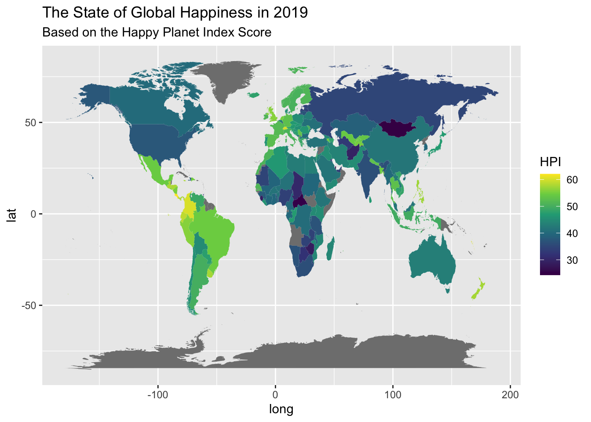
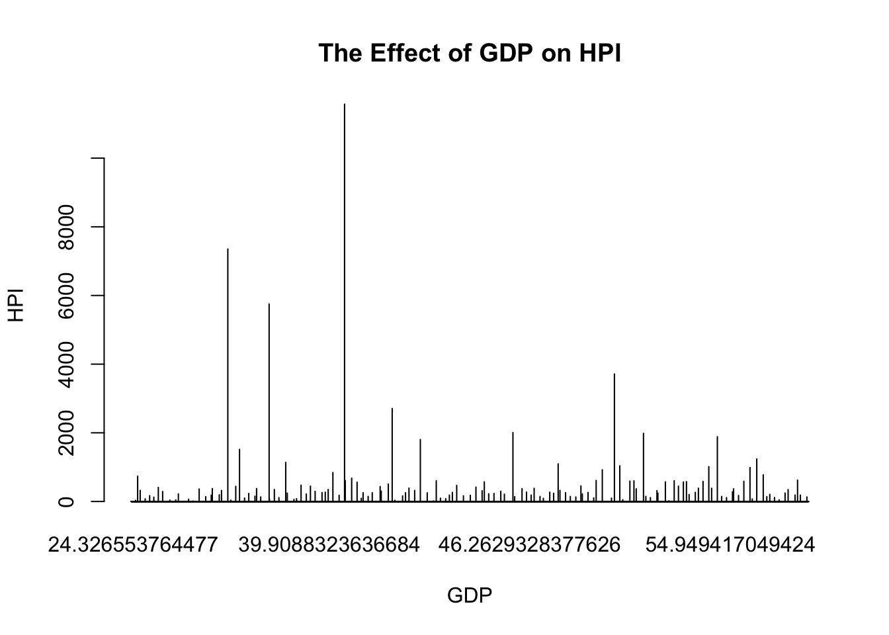

# Setting up the new R environment, starting fresh, click run!
rm(list=ls())
# Setting up the working directory, click run!
setwd("~/Documents/Fall 2022/EPPS 6356/samantha-manuel.github.io")
# Turning on the packages required for HW2, click run!
library(Hmisc)Loading required package: latticeLoading required package: survivalLoading required package: FormulaLoading required package: ggplot2
Attaching package: 'Hmisc'The following objects are masked from 'package:base':
format.pval, unitslibrary(xlsx)
library(tidyverse)── Attaching packages
───────────────────────────────────────
tidyverse 1.3.2 ──✓ tibble 3.1.6 ✓ dplyr 1.0.8
✓ tidyr 1.2.0 ✓ stringr 1.4.0
✓ readr 2.1.1 ✓ forcats 0.5.1
✓ purrr 0.3.4
── Conflicts ────────────────────────────────────────── tidyverse_conflicts() ──
x dplyr::filter() masks stats::filter()
x dplyr::lag() masks stats::lag()
x dplyr::src() masks Hmisc::src()
x dplyr::summarize() masks Hmisc::summarize()library(maps)
Attaching package: 'maps'
The following object is masked from 'package:purrr':
maplibrary(countrycode)
library(ggplot2)
# Reading the file, click run!
HPI <- read.xlsx("~/Documents/Fall 2022/EPPS 6356/samantha-manuel.github.io/happy-planet-index-2006-2020-public-data-set.xlsx", sheetIndex = 2)
#Remove first 7 rows and save as 'HPI2019', click run!
HPI2019 <- HPI[-c(1:7),]
view(HPI2019)
#remove 3rd column ('NA..2') as it is not needed for further analysis, click run!
HPI2019 <- HPI2019 %>%
select(-'NA..2')
#Rename columns for simplicity, click run!
HPI2019 <- HPI2019 %>%
rename(HPI_rank = 'NA.') %>%
rename(Country = 'X1..Rankings.for.all.countries..2006...2020') %>%
rename(ISO = 'NA..1') %>%
rename(Continent = 'NA..3') %>%
rename(Pop = 'NA..4') %>%
rename(Life_Exp = 'NA..5') %>%
rename(Wellbeing = 'NA..6') %>%
rename(Ecological_Footprint = 'NA..7') %>%
rename(HPI = 'NA..8') %>%
rename(Biocapacity = 'NA..9') %>%
rename(GDP_per_capita = 'NA..10')
#Remove row with index number 8 so the data set starts with 'Costa Rica', click run!
HPI2019 <- HPI2019[-1,]
#Change to show a maximum of 15 digits, click run!
options(digits = 15)
#Convert data type from character to numeric for selected columns, click run!
HPI2019 <- HPI2019 %>%
mutate(HPI_rank = as.numeric(HPI_rank)) %>%
mutate(Pop = as.numeric(Pop)) %>%
mutate(Life_Exp = as.numeric(Life_Exp)) %>%
mutate(Wellbeing = as.numeric(Wellbeing)) %>%
mutate(Ecological_Footprint = as.numeric(Ecological_Footprint)) %>%
mutate(HPI = as.numeric(HPI)) %>%
mutate(Biocapacity = as.numeric(Biocapacity)) %>%
mutate(GDP_per_capita = as.numeric(GDP_per_capita))Warning in mask$eval_all_mutate(quo): NAs introduced by coercion#View cleaned data set, click run!
str(HPI2019)'data.frame': 152 obs. of 11 variables:
$ HPI_rank : num 1 2 3 4 5 6 7 8 9 10 ...
$ Country : chr "Costa Rica" "Vanuatu" "Colombia" "Switzerland" ...
$ ISO : chr "CRI" "VUT" "COL" "CHE" ...
$ Continent : chr "1" "8" "1" "3" ...
$ Pop : num 5048 300 50339 8591 17374 ...
$ Life_Exp : num 80.3 70.5 77.3 83.8 77 78.5 74.5 74.3 75.3 77.9 ...
$ Wellbeing : num 7 6.96 6.35 7.69 5.81 ...
$ Ecological_Footprint: num 2.65 1.62 1.9 4.14 1.51 ...
$ HPI : num 62.1 60.4 60.2 60.1 58.8 ...
$ Biocapacity : num 1.56 1.56 1.56 1.56 1.56 1.56 1.56 1.56 1.56 1.56 ...
$ GDP_per_capita : num 20297 3153 14625 68391 11375 ...head(HPI2019) HPI_rank Country ISO Continent Pop Life_Exp Wellbeing
9 1 Costa Rica CRI 1 5047.561 80.3 6.99761867523193
10 2 Vanuatu VUT 8 299.882 70.5 6.95562031699646
11 3 Colombia COL 1 50339.443 77.3 6.35029792785645
12 4 Switzerland CHE 3 8591.361 83.8 7.69422101974487
13 5 Ecuador ECU 1 17373.657 77.0 5.80913114547729
14 6 Panama PAN 1 4246.440 78.5 6.08595514297485
Ecological_Footprint HPI Biocapacity GDP_per_capita
9 2.64852226555336 62.0575517701467 1.56 20296.82150273480
10 1.61609366019406 60.3638758082503 1.56 3153.01516775842
11 1.90475086511154 60.1651674984682 1.56 14624.97129653470
12 4.14251611511677 60.1046503431779 1.56 68390.71298545389
13 1.50707276829587 58.8312130560036 1.56 11375.33118432910
14 2.09549713846328 57.9321698535130 1.56 31458.69262552130view(HPI2019)
#View map of data 'data_map', click run!
require(maps)
require(countrycode)
data_map <- map_data("world")
view(data_map)
#Consulting the countrycode documentation for details, click run!
?countrycode
#Create a new column in data_map called 'ISO' to match the ISO column in the HPI2019 table, click run!
data_map$ISO = countrycode(data_map$region, origin="country.name", destination = 'iso3c')Warning in countrycode_convert(sourcevar = sourcevar, origin = origin, destination = dest, : Some values were not matched unambiguously: Ascension Island, Azores, Barbuda, Bonaire, Canary Islands, Chagos Archipelago, Grenadines, Heard Island, Kosovo, Madeira Islands, Micronesia, Saba, Saint Martin, Siachen Glacier, Sint Eustatius, Virgin Islands#View updated data_map, click run!
view(data_map)
#Merge HPI2019 with data_map to create a data set which will be used to plot HPI in the world map, click run!
mergedHPI2019 <- full_join(data_map, HPI2019, by="ISO")
#View merged data set, click run!
view(mergedHPI2019)
#Generate the world map chart, click run!
ggplot(mergedHPI2019, aes(x = long, y = lat, group = group, fill = HPI)) + geom_polygon() + scale_fill_viridis_c() +
labs(title = "The State of Global Happiness in 2019", subtitle = "Based on the Happy Planet Index Score")
barplot(table(mergedHPI2019$HPI,mergedHPI2019$GDP_per_capita), beside=TRUE, main= "The Effect of GDP on HPI", xlab= "GDP", ylab= "HPI")